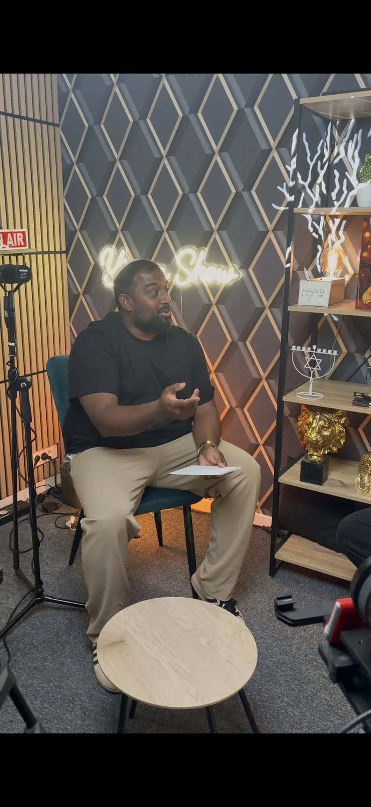
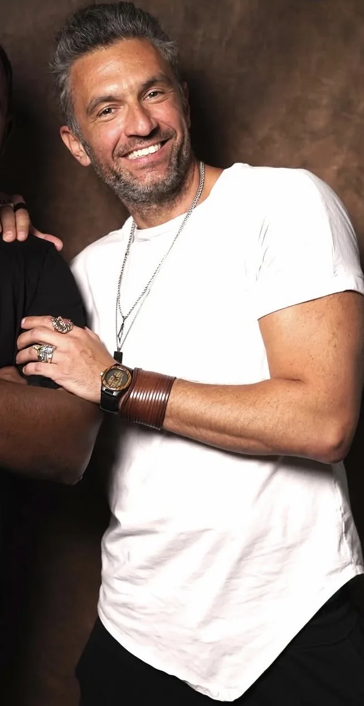
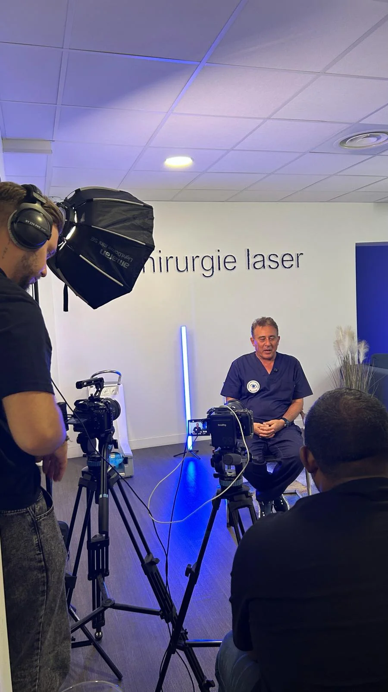
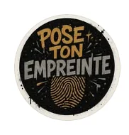
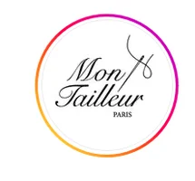
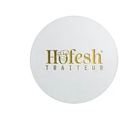
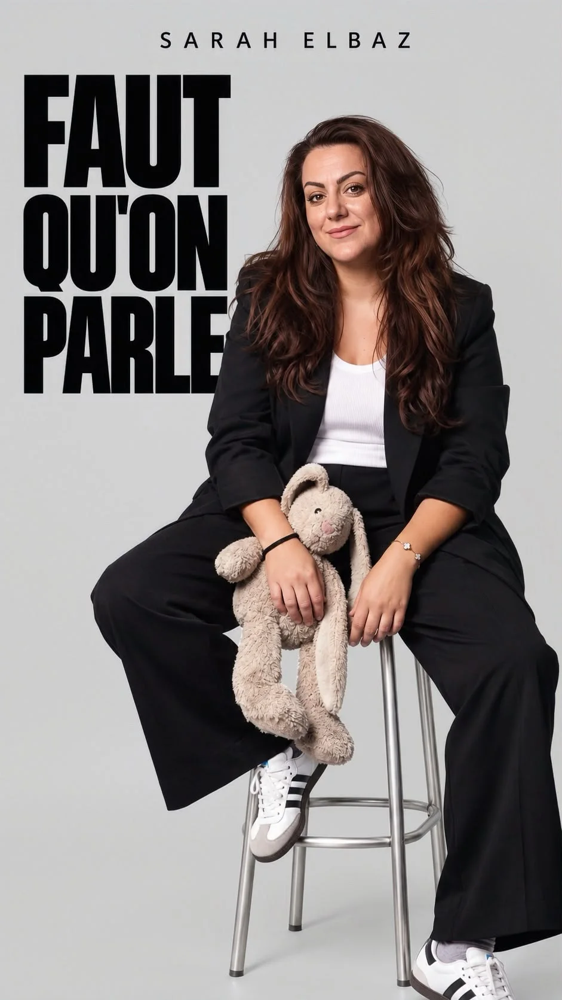
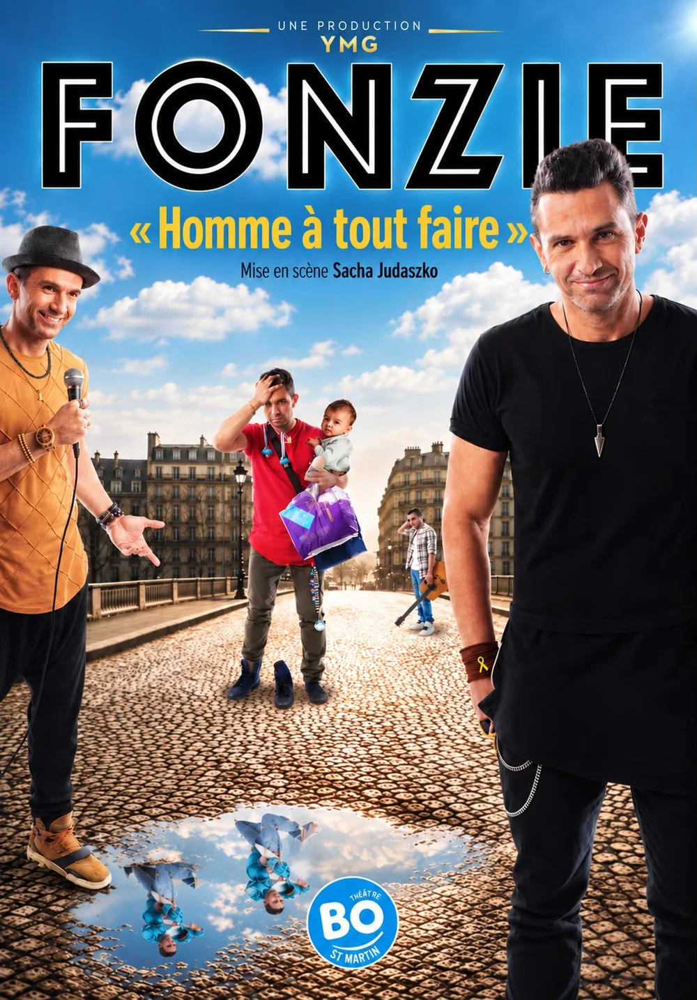
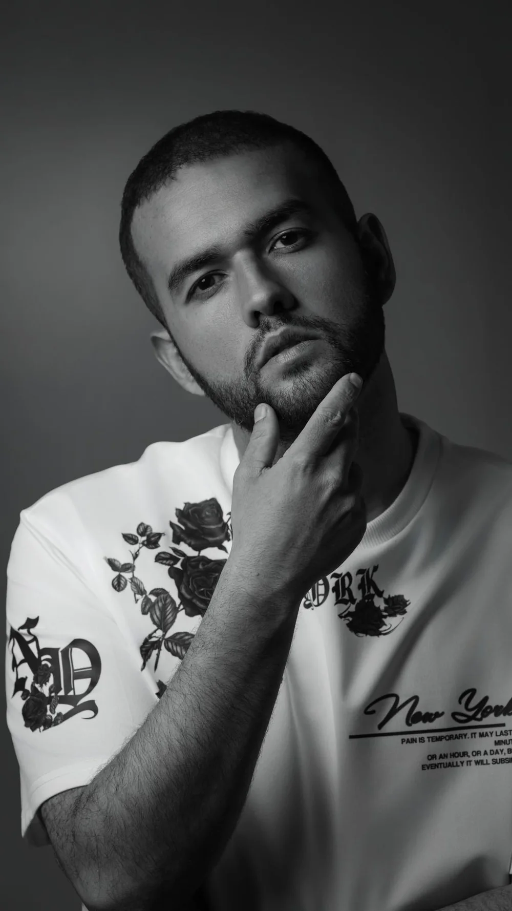
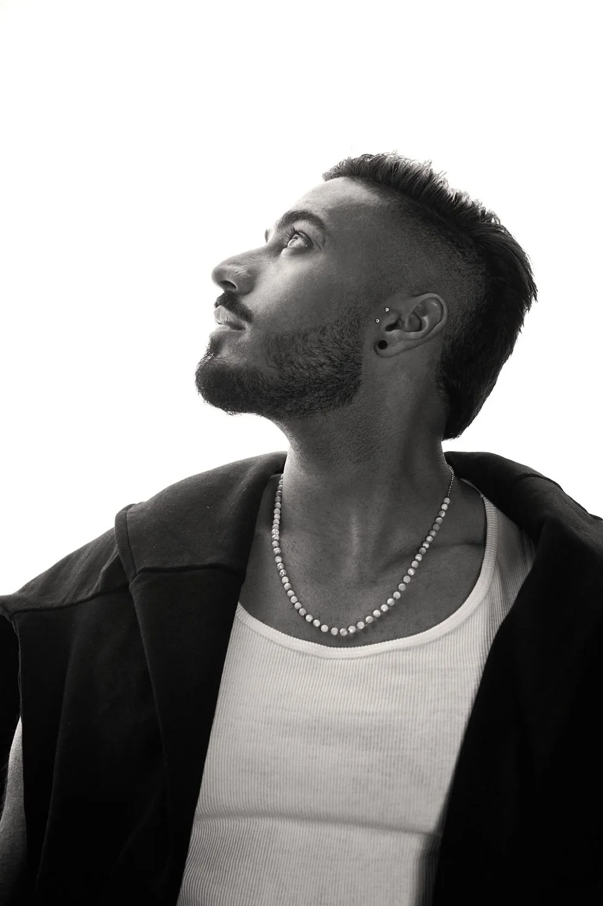

Le média
Pour le public
Le podcast d'interviews. Des parcours de vie racontés en face à face, publiés chaque semaine sur YouTube, Instagram et TikTok.
Voir les épisodes
Sur le plateau · Paris & NiceOn donne le micro aux histoires qu'on n'entend nulle part ailleurs.
Un podcast, une agence de talents et un pôle business, avec des studios à Paris et à Nice. Anonymes ou connus, nos invités racontent leurs choix de vie, leurs réussites et leurs échecs, sans filtre.
Un média qui produit ses propres histoires, une agence qui accompagne ses talents, et un pôle business qui met ce savoir-faire au service des marques.
Pour le public
Le podcast d'interviews. Des parcours de vie racontés en face à face, publiés chaque semaine sur YouTube, Instagram et TikTok.
Voir les épisodes
Pour les artistes
L'agence. On accompagne, on structure et on met en lumière les artistes qui marquent la scène : image, carrière, visibilité.

Pour les entreprises · Studios Paris & Nice
Partenariats d'épisodes et business reportage. On raconte votre marque avec les mêmes moyens que nos propres contenus, et on la diffuse sur nos canaux.
Travailler avec nousNotre audience sur les réseaux, les marques qui nous font confiance et les médias qui parlent de nous.
25,7K abonnés cumulés sur les trois plateformes.

Partenaire@pose_ton_empreinte Partenaire@tandem_tv_2
Partenaire@mon_tailleur_paris
Partenaire@hofesh_traiteur 7/9 Comedy RoomSalle de spectacle & d'entraînement@septneufcomedyroomLe détail de chaque collaboration est disponible sur demande : business@yinonshow.com
Sarah Elbaz, le rire comme une évidence
Presse écrite · n°1842 · 17 septembre 2026 Lire l'article ↗ Radio J · InterviewSri-lankais converti au judaïsme : « Cette religion m'a apporté toutes les réponses »
Interview vidéo · 25 août 2026 Voir la vidéo ↗ i24NEWS · Regards CroisésL'humour, l'identité et le courage face aux menaces
Passage télévisé · 18 août 2026 Lire l'article ↗ Actu J · PortraitYinon, l'homme qui fait dialoguer les parcours
Presse écrite · n°1837 · 23 juillet 2026 Lire l'article ↗Chaque épisode, une rencontre. Choisis ton thème et plonge dedans.
L'agence accompagne les artistes de notre écosystème : image, contenus, visibilité et mise en relation. Pour un booking ou une collaboration, on répond directement.
Fondateur · Présentateur · Producteur
Créateur du YinonShow et fondateur de Yinon Media Group. Une vision : révéler les talents et donner la parole à ceux qu'on n'entend pas.
Booking / contact
@sarahelbzComédienne · Chroniqueuse Radio J
Maman, comédienne, chroniqueuse : un vrai couteau suisse. Sa voix porte sur Radio J et sa présence rayonne sur les réseaux.
Booking / contact
@fonzie_kohaneChanteur · Danseur · Comédien · Showman
L'ashkénaze qui fait rire les séfarades. Un talent multifacette qui enflamme chaque scène, de la danse Bollywood au stand-up.
Booking / contact
@abiton.noam
@sagigetterTrois niveaux d'intégration pour entrer dans l'écosystème YinonShow, du premier point de contact à la co-production complète. Chaque formule s'articule autour de quatre axes : visibilité, incarnation, contenu de marque, amplification.
Votre marque apparaît dans l'épisode et dans son sillage. Le premier point de contact avec notre audience.
L'animateur porte votre marque à l'antenne et on produit un contenu dédié pour la faire vivre au-delà de l'épisode.
On construit l'épisode avec vous et on ouvre tout le groupe : production, studio et réseau de talents.
Tarifs et plan de diffusion communiqués sur demande : business@yinonshow.com
On vient chez vous, on capte votre quotidien, on raconte votre marque en vidéo, puis on la diffuse sur nos canaux et on vous livre les fichiers prêts pour les vôtres. Nos studios sont à Paris et à Nice (voir les studios).
L'équipe se déplace dans vos locaux pour un reportage authentique et professionnel.
Montage dynamique, sous-titrage, color grading. Prêt pour YouTube, Instagram et TikTok.
Publication sur nos canaux et livraison des fichiers pour vos propres réseaux.
Shooting inclus. Portraits, ambiance, produits, tout ce qu'il faut pour votre comm.
Nos studios, trois formules de tournage pour révéler une histoire, un parcours ou une mission, et la transformer en contenus prêts à diffuser. Cliquez sur un studio pour voir la formule.
Option tournage en extérieur disponible. Tarifs communiqués sur demande. Studios YMG à Paris et à Nice, enregistrements sur rendez-vous.
Tout a commencé avec une idée simple : donner la parole à ceux qu'on n'entend pas. Des parcours de vie authentiques, des histoires de résilience, de foi, d'humour et de courage.
Ce qui était une conversation entre amis est devenu un rendez-vous. Le plateau parisien du YinonShow est aujourd'hui un lieu de rencontre, et la communauté qui l'entoure est fidèle et engagée.
De là est né Yinon Media Group, une structure complète : production, agence de talents, business reportage et partenariats.
Coulisses du plateau, extraits d'épisodes, annonces d'invités : tout se passe d'abord sur nos réseaux sociaux.
Nouveaux épisodes, invités annoncés en avant-première, backstage du plateau. Une fois par semaine, pas plus.
Partenariat, booking d'un talent, reportage, ou l'envie de venir témoigner sur le plateau.
contact@yinonshow.com · business@yinonshow.com